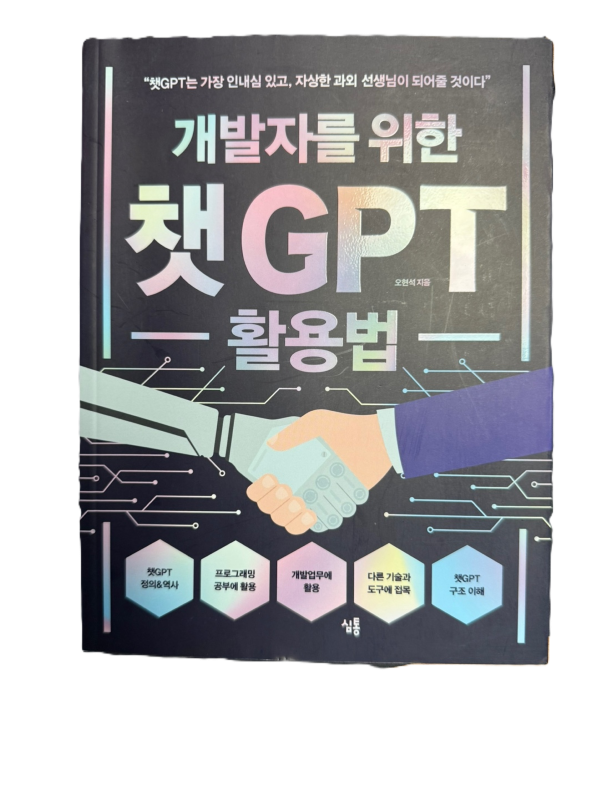

개발자를 위한 챗GPT 활용법

저자: 오현석
발행일: 2023년
이 책은 인공지능 언어모델인 챗GPT에 대해 개발자의 관점에서 설명한다. 챗GPT가 무엇인지, 언어모델이란 어떤 개념인지부터 시작하여 GPT가 문장을 생성하는 간단한 원리까지 다룬다.
그리고 프로그래밍 공부를 어떻게 도울 수 있는지 실제 예시를 들어 설명한다. 코드 작성, 디버깅, 문서화 등 다양한 개발 업무에서 챗GPT를 어떻게 활용할 수 있는지에 대한 팁도 제공된다.
또한 API 호출 방식, 플러그인과 라이브러리 개념 등도 간단히 소개되어 있으며, 챗GPT의 내부 구조와 작동 방식에 대한 이해를 돕는 내용도 포함된다. 마지막으로 GPT가 가진 한계와 앞으로의 발전 가능성에 대해서도 설명하며, 개발자로서 이를 어떻게 바라봐야 하는지도 제시해준다.
GPT를 처음 접하거나, 개발 업무에 활용해보고 싶은 사람들에게 실용적이고 쉽게 접근할 수 있는 책이다.